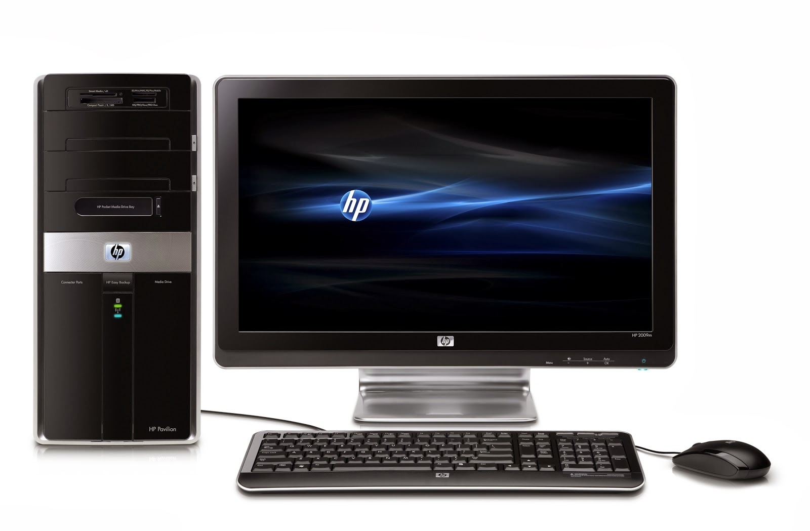

★Quinta generación (1983-2017)★
Surge a partir de los avances tecnológicos que se encontraron. Se crea entonces la computadora portátil o laptop tal cual la conocemos en la actualidad. IBM presenta su primera laptop o computadora portátil y revoluciona el sector informativo. En vista de la acelerada marcha de la microelectrónica, la sociedad industrial se ha dado a la tarea de poner también a esa altura el desarrollo del software y los sistemas con los que se manejaban las computadoras. Estas son la base de las computadoras modernas de hoy en día. La quinta generación de computadoras, también conocida por sus siglas en inglés, FGCS (de Fifth Generation Computer Systems) fue un ambicioso proyecto hecho por Japón a finales de la década de los 80. Su objetivo era el desarrollo de una nueva clase de computadoras que utilizarían técnicas y tecnologías de inteligencia artificial tanto en el plano del hardware como del software,1 usando el lenguaje PROLOG2 3 4 al nivel del lenguaje de máquina y serían capaces de resolver problemas complejos, como la traducción automática de una lengua natural a otra (del japonés al inglés, por ejemplo). Como unidad de medida del rendimiento y prestaciones de estas computadoras se empleaba la cantidad de LIPS (Logical Inferences Per Second) capaz de realizar durante la ejecución de las distintas tareas programadas. Para su desarrollo se emplearon diferentes tipos de arquitecturas VLSI (Very Large Scale Integration).

Dirección: Cl. 71b #29-14
PBX: 3175959760
Email: cristianmoralesoc2002@gmail.com